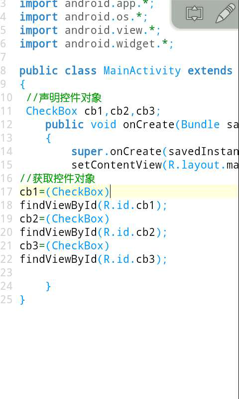

CheckBox的了解(18课)
CheckBox就是多选框的意思，有两种状态，一种是选中状态一种是未选中状态，比如我们的QQ在注册的时候就有一个我同意服务条款的多选框，以前还有声音什么接受群消息之类的，下面我们的课程开始。
首先我们新建一个项目，打开我们的布局文件，我们定义3个CheckBox，分别为每个多选框添加一个id，内容为吃饭，睡觉，全选，
然后我们运行我们的项目，里面有3个多选框，吃饭，睡觉，全选，我们点击一下后就可以设置为选中，再点击一下就是未选中，如图，吃饭是未选中状态，睡觉和全选是选中状态，接下来我们来做一个小例子，我们点击全选，如果为选中状态，我们将吃饭睡觉也设置为全选，如果为未选中状态，我们将吃饭睡觉也取消选中。
接下来我们打开我们的Java代码，声明3个多选框对象，并且找到对象。

然后我们定义一个内部类实现OnCheckedChangeListener接口，导入一下，会弹出两个选项，我们选择第2个 android.widget.CompoundButton.OnCheckedChangeListener这个。然后重写里面的 onCheckedChanged (CompoundButton buttonView, boolean isChecked)方法，当多选框状态被改变将会执行该方法，是不是觉得又臭又长， 前面我们说过准备工具要大家下载一个记事本软件，我们可以记在记事本上面，这里推荐一个920文本编辑器。最后为全选多选框绑定监听器对象。
接下来看我们的事件处理代码，该方法接受两个参数，第一个buttonView代表的是多选框对象，我们可以多个多选框绑定一个监听器，然后根据该参数进行判断，第2个参数isChecked是一个布尔类型，如果选中返回真，未选中返回假。前面我们介绍的if小括号里面的条件准确的说是一个布尔型参数，如果为真则执行大括号里面的内容。我们可以进行判断如果选中了就执行什么，未选中执行什么。我们看我们的 cb1.setChecked(isChecked);这个是设置多选框的选中状态，括号内接受一个布尔型参数，如果为真则设置为选中，如果为假就是取消选中。因为与全选的选中状态是同步的，所以我们直接把isChecked传进去就可以了。
接下来我们运行我们的项目，点击全选然后吃饭和睡觉也会自动同时选上，取消全选，上面两个也同时取消。
我们再介绍另外一种方法同样可以实现，用我们熟悉的OnClickListener，从这里连接4楼内容，我们定义一个内部类实现OnClickListener接口，然后为cb3全选绑定监听器。
接下来来看我们的事件处理onClick方法，被点击后会触发该方法，那怎样判断选中状态。该方法传进来一个参数v，是View类型的，我们将它转型为CheckBox类型cb，该类型有一个isChecked()方法来判断是否选中状态的，我们赋值给一个布尔型b，然后设置多选框1和多选框2的选中状态为b。接着我们运行我们的项目也是同样的功能，点中全选，上面两个全部选上，取消上面两个也全部取消。